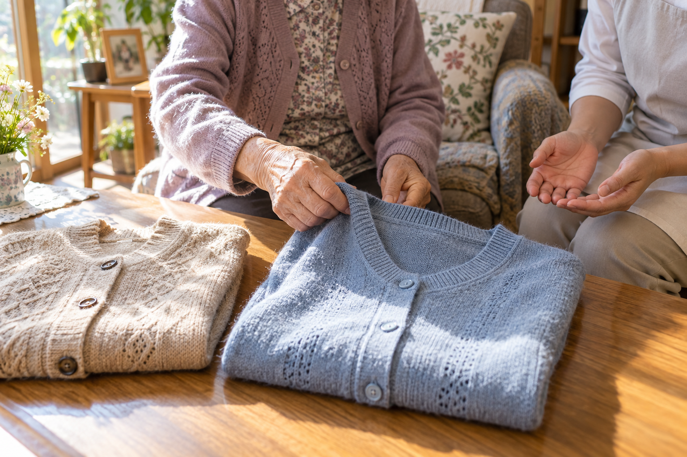

出かける前に、二枚の上着を並べる。「今日はどちらにしましょうか」。返事を待つ間に、支援者が「こちらの方が暖かいから」と一枚を手に取る。日常にありそうな、仮の場面です。
悪気はありません。時間を守りたいし、風邪もひいてほしくない。それでも、選ぶ前に話が進めば、本人の気持ちを知る機会はなくなります。介護の質を考えるとき、作業を終えたかどうかと同じくらい、誰の意向で進んだのかを見たいと思います。
「好きなものを選んでください」と言えば、十分に意思を尊重したことになるでしょうか。選択肢が多すぎたり、説明が抽象的だったりすれば、かえって選びにくいことがあります。言葉だけで分かりにくい場合には、実物を見せたり、一つずつ確かめたりする工夫が考えられます。
厚生労働省は、認知症の人が自らの意思に基づいた生活を送ることを目指す意思決定支援のガイドラインを公開しています。ここで大切にしたいのは、支援が必要であることと、本人の意思を確かめなくてよいことを混同しない姿勢です。
先ほどの上着なら、「青と白があります」と実物を示し、必要なら気温や外出先の情報を短く添える。本人が触れたものや表情も手掛かりにしながら、選んだ意味を急いで決めつけない。これは一つの考え方の例であり、伝え方は本人の状態や普段のコミュニケーションに合わせて調整します。
長く関わっていると、好きな色、苦手なこと、落ち着く順番が分かってきます。それは支援の大切な資産です。ただ、よく知っているからこそ、「この方はこういう人」と先回りしてしまう危うさもあります。
昨日は出かけたかったけれど、今日は静かに過ごしたい。いつも選ぶものより、今日は別のものがよい。暮らしには、その日の気分があります。以前の希望を参考にしつつ、今日も同じかを確かめる余地を残したいのです。
家族の思いが本人の意向と異なることもあります。そのとき、一方の言葉をもう一方の意思として記録すると、次の支援者には違いが見えなくなります。「本人はこう話した」「家族はこの点を心配している」と分けて扱えば、何を一緒に考える必要があるのかが分かります。
「希望どおり対応」とだけ残した記録では、どんな希望だったのか、どう確かめたのかが伝わりません。例えば「二枚を見せると青い上着を手に取り、これがよいと話された」と書けば、本人の言葉と、その意思を確かめた場面が次の担当者へ届きます。
反応の意味がはっきりしない場合は、観察したことと支援者の解釈を分ける。「嫌がっていた」と断定するより、どのような言葉や動きがあり、何が未確認なのかを残す方が、チームで考える手掛かりになります。
本人の希望だけでは直ちに実現できない場合もあります。安全上の懸念やサービスの範囲などを、本人が理解しやすい形で説明し、必要な関係者と相談することになります。それでも、実現が難しい理由を本人の「希望なし」に置き換えてはいけないと思います。
訪問する側にとっては、一日の中の一件の支援です。しかし本人にとっては、自分の家で続いている暮らしの一場面です。服を選ぶ、話す相手を選ぶ、今日は少し休む。その小さな選択が積み重なって、その人の生活になります。
効率よく支援する工夫を続けながら、答えを待つ余白は残す。代わりに決めてあげる前に、選びやすくする方法を考える。訪問介護が守りたいのは、日々の用事が済むことに加えて、本人が自分の暮らしに参加し続けられることなのだと思います。
参考：厚生労働省認知症の人の日常生活・社会生活における意思決定支援ガイドライン。本文中の場面・記録例は説明用の想定例です。